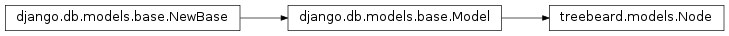
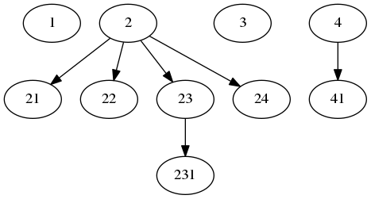
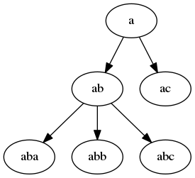

API¶
-
class
treebeard.models.Node(*args, **kwargs)¶ Bases:
django.db.models.base.ModelNode class
This is the base class that defines the API of all tree models in this library:
treebeard.mp_tree.MP_Node(materialized path)treebeard.ns_tree.NS_Node(nested sets)treebeard.al_tree.AL_Node(adjacency list)
Warning
Please be aware of the Known Caveats when using this library.
-
classmethod
add_root(**kwargs)¶ Adds a root node to the tree. The new root node will be the new rightmost root node. If you want to insert a root node at a specific position, use
add_sibling()in an already existing root node instead.Parameters: - **kwargs – object creation data that will be passed to the inherited Node model
- instance – Instead of passing object creation data, you can pass an already-constructed (but not yet saved) model instance to be inserted into the tree.
Returns: the created node object. It will be save()d by this method.
Raises: NodeAlreadySaved – when the passed
instancealready exists in the databaseExample:
MyNode.add_root(numval=1, strval='abcd')
Or, to pass in an existing instance:
new_node = MyNode(numval=1, strval='abcd') MyNode.add_root(instance=new_node)
-
add_child(**kwargs)¶ Adds a child to the node. The new node will be the new rightmost child. If you want to insert a node at a specific position, use the
add_sibling()method of an already existing child node instead.Parameters: - **kwargs – Object creation data that will be passed to the inherited Node model
- instance – Instead of passing object creation data, you can pass an already-constructed (but not yet saved) model instance to be inserted into the tree.
Returns: The created node object. It will be save()d by this method.
Raises: NodeAlreadySaved – when the passed
instancealready exists in the databaseExample:
node.add_child(numval=1, strval='abcd')
Or, to pass in an existing instance:
new_node = MyNode(numval=1, strval='abcd') node.add_child(instance=new_node)
-
add_sibling(pos=None, **kwargs)¶ Adds a new node as a sibling to the current node object.
Parameters: - pos –
The position, relative to the current node object, where the new node will be inserted, can be one of:
first-sibling: the new node will be the new leftmost siblingleft: the new node will take the node’s place, which will be moved to the right 1 positionright: the new node will be inserted at the right of the nodelast-sibling: the new node will be the new rightmost siblingsorted-sibling: the new node will be at the right position according to the value of node_order_by
- **kwargs – Object creation data that will be passed to the inherited Node model
- instance – Instead of passing object creation data, you can pass an already-constructed (but not yet saved) model instance to be inserted into the tree.
Returns: The created node object. It will be saved by this method.
Raises: - InvalidPosition – when passing an invalid
posparm - InvalidPosition – when
node_order_byis enabled and theposparm wasn’tsorted-sibling - MissingNodeOrderBy – when passing
sorted-siblingasposand thenode_order_byattribute is missing - NodeAlreadySaved – when the passed
instancealready exists in the database
Examples:
node.add_sibling('sorted-sibling', numval=1, strval='abc')
Or, to pass in an existing instance:
new_node = MyNode(numval=1, strval='abc') node.add_sibling('sorted-sibling', instance=new_node)
- pos –
-
delete()¶ Removes a node and all it’s descendants.
Note
Call our queryset’s delete to handle children removal. Subclasses will handle extra maintenance.
-
classmethod
get_tree(parent=None)¶ Returns: A list of nodes ordered as DFS, including the parent. If no parent is given, the entire tree is returned.
-
get_depth()¶ Returns: the depth (level) of the node Example:
node.get_depth()
-
get_ancestors()¶ Returns: A queryset containing the current node object’s ancestors, starting by the root node and descending to the parent. (some subclasses may return a list) Example:
node.get_ancestors()
-
get_children()¶ Returns: A queryset of all the node’s children Example:
node.get_children()
-
get_children_count()¶ Returns: The number of the node’s children Example:
node.get_children_count()
-
get_descendants()¶ Returns: A queryset of all the node’s descendants, doesn’t include the node itself (some subclasses may return a list). Example:
node.get_descendants()
-
get_descendant_count()¶ Returns: the number of descendants of a node. Example:
node.get_descendant_count()
-
get_first_child()¶ Returns: The leftmost node’s child, or None if it has no children. Example:
node.get_first_child()
-
get_last_child()¶ Returns: The rightmost node’s child, or None if it has no children. Example:
node.get_last_child()
-
get_first_sibling()¶ Returns: The leftmost node’s sibling, can return the node itself if it was the leftmost sibling. Example:
node.get_first_sibling()
-
get_last_sibling()¶ Returns: The rightmost node’s sibling, can return the node itself if it was the rightmost sibling. Example:
node.get_last_sibling()
-
get_prev_sibling()¶ Returns: The previous node’s sibling, or None if it was the leftmost sibling. Example:
node.get_prev_sibling()
-
get_next_sibling()¶ Returns: The next node’s sibling, or None if it was the rightmost sibling. Example:
node.get_next_sibling()
-
get_parent(update=False)¶ Returns: the parent node of the current node object. Caches the result in the object itself to help in loops. Parameters: update – Updates de cached value. Example:
node.get_parent()
-
get_root()¶ Returns: the root node for the current node object. Example:
node.get_root()
-
get_siblings()¶ Returns: A queryset of all the node’s siblings, including the node itself. Example:
node.get_siblings()
-
is_child_of(node)¶ Returns: Trueif the node is a child of another node given as an argument, else, returnsFalseParameters: node – The node that will be checked as a parent Example:
node.is_child_of(node2)
-
is_descendant_of(node)¶ Returns: Trueif the node is a descendant of another node given as an argument, else, returnsFalseParameters: node – The node that will be checked as an ancestor Example:
node.is_descendant_of(node2)
-
is_sibling_of(node)¶ Returns: Trueif the node is a sibling of another node given as an argument, else, returnsFalseParameters: node – The node that will be checked as a sibling Example:
node.is_sibling_of(node2)
-
is_root()¶ Returns: True if the node is a root node (else, returns False) Example:
node.is_root()
-
is_leaf()¶ Returns: True if the node is a leaf node (else, returns False) Example:
node.is_leaf()
-
move(target, pos=None)¶ Moves the current node and all it’s descendants to a new position relative to another node.
Parameters: - target – The node that will be used as a relative child/sibling when moving
- pos –
The position, relative to the target node, where the current node object will be moved to, can be one of:
first-child: the node will be the new leftmost child of thetargetnodelast-child: the node will be the new rightmost child of thetargetnodesorted-child: the new node will be moved as a child of thetargetnode according to the value ofnode_order_byfirst-sibling: the node will be the new leftmost sibling of thetargetnodeleft: the node will take thetargetnode’s place, which will be moved to the right 1 positionright: the node will be moved to the right of thetargetnodelast-sibling: the node will be the new rightmost sibling of thetargetnodesorted-sibling: the new node will be moved as a sibling of thetargetnode according to the value ofnode_order_by
Note
If no
posis given the library will uselast-sibling, orsorted-siblingifnode_order_byis enabled.
Returns: None
Raises: - InvalidPosition – when passing an invalid
posparm - InvalidPosition – when
node_order_byis enabled and theposparm wasn’tsorted-siblingorsorted-child - InvalidMoveToDescendant – when trying to move a node to one of it’s own descendants
- PathOverflow – when the library can’t make room for the node’s new position
- MissingNodeOrderBy – when passing
sorted-siblingorsorted-childasposand thenode_order_byattribute is missing
Note
The node can be moved under another root node.
Examples:
node.move(node2, 'sorted-child') node.move(node2, 'prev-sibling')
-
save(force_insert=False, force_update=False, using=None, update_fields=None)¶ Saves the current instance. Override this in a subclass if you want to control the saving process.
The ‘force_insert’ and ‘force_update’ parameters can be used to insist that the “save” must be an SQL insert or update (or equivalent for non-SQL backends), respectively. Normally, they should not be set.
-
classmethod
get_first_root_node()¶ Returns: The first root node in the tree or Noneif it is empty.Example:
MyNodeModel.get_first_root_node()
-
classmethod
get_last_root_node()¶ Returns: The last root node in the tree or Noneif it is empty.Example:
MyNodeModel.get_last_root_node()
-
classmethod
get_root_nodes()¶ Returns: A queryset containing the root nodes in the tree. Example:
MyNodeModel.get_root_nodes()
-
classmethod
load_bulk(bulk_data, parent=None, keep_ids=False)¶ Loads a list/dictionary structure to the tree.
Parameters: - bulk_data –
The data that will be loaded, the structure is a list of dictionaries with 2 keys:
data: will store arguments that will be passed for object creation, andchildren: a list of dictionaries, each one has it’s owndataandchildrenkeys (a recursive structure)
- parent – The node that will receive the structure as children, if not specified the first level of the structure will be loaded as root nodes
- keep_ids – If enabled, loads the nodes with the same id that are given in the structure. Will error if there are nodes without id info or if the ids are already used.
Returns: A list of the added node ids.
Note
Any internal data that you may have stored in your nodes’ data (
path,depth) will be ignored.Note
If your node model has a ForeignKey this method will try to load the related object before loading the data. If the related object doesn’t exist it won’t load anything and will raise a DoesNotExist exception. This is done because the dump_data method uses integers to dump related objects.
Note
If your node model has
node_order_byenabled, it will take precedence over the order in the structure.Example:
data = [{'data':{'desc':'1'}}, {'data':{'desc':'2'}, 'children':[ {'data':{'desc':'21'}}, {'data':{'desc':'22'}}, {'data':{'desc':'23'}, 'children':[ {'data':{'desc':'231'}}, ]}, {'data':{'desc':'24'}}, ]}, {'data':{'desc':'3'}}, {'data':{'desc':'4'}, 'children':[ {'data':{'desc':'41'}}, ]}, ] # parent = None MyNodeModel.load_data(data, None)
Will create:
- bulk_data –
-
classmethod
dump_bulk(parent=None, keep_ids=True)¶ Dumps a tree branch to a python data structure.
Parameters: - parent – The node whose descendants will be dumped. The node itself will be included in the dump. If not given, the entire tree will be dumped.
- keep_ids – Stores the id value (primary key) of every node. Enabled by default.
Returns: A python data structure, described with detail in
load_bulk()Example:
tree = MyNodeModel.dump_bulk() branch = MyNodeModel.dump_bulk(node_obj)
-
classmethod
find_problems()¶ Checks for problems in the tree structure.
-
classmethod
fix_tree()¶ Solves problems that can appear when transactions are not used and a piece of code breaks, leaving the tree in an inconsistent state.
-
classmethod
get_descendants_group_count(parent=None)¶ Helper for a very common case: get a group of siblings and the number of descendants (not only children) in every sibling.
Parameters: parent – The parent of the siblings to return. If no parent is given, the root nodes will be returned. Returns: A list (NOT a Queryset) of node objects with an extra attribute: descendants_count. Example:
# get a list of the root nodes root_nodes = MyModel.get_descendants_group_count() for node in root_nodes: print '%s by %s (%d replies)' % (node.comment, node.author, node.descendants_count)
-
classmethod
get_annotated_list(parent=None, max_depth=None)¶ Gets an annotated list from a tree branch.
Parameters: - parent – The node whose descendants will be annotated. The node itself will be included in the list. If not given, the entire tree will be annotated.
- max_depth – Optionally limit to specified depth
Example:
annotated_list = MyModel.get_annotated_list()
With data:
Will return:
[ (a, {'open':True, 'close':[], 'level': 0}) (ab, {'open':True, 'close':[], 'level': 1}) (aba, {'open':True, 'close':[], 'level': 2}) (abb, {'open':False, 'close':[], 'level': 2}) (abc, {'open':False, 'close':[0,1], 'level': 2}) (ac, {'open':False, 'close':[0], 'level': 1}) ]
This can be used with a template like:
{% for item, info in annotated_list %} {% if info.open %} <ul><li> {% else %} </li><li> {% endif %} {{ item }} {% for close in info.close %} </li></ul> {% endfor %} {% endfor %}
Note
This method was contributed originally by Alexey Kinyov, using an idea borrowed from django-mptt.
New in version 1.55.
-
classmethod
get_annotated_list_qs(qs)¶ Gets an annotated list from a queryset.
-
classmethod
get_database_vendor(action)¶ returns the supported database vendor used by a treebeard model when performing read (select) or write (update, insert, delete) operations.
Parameters: action – read or write Returns: postgresql, mysql or sqlite Example:
MyNodeModel.get_database_vendor("write")
New in version 1.61.